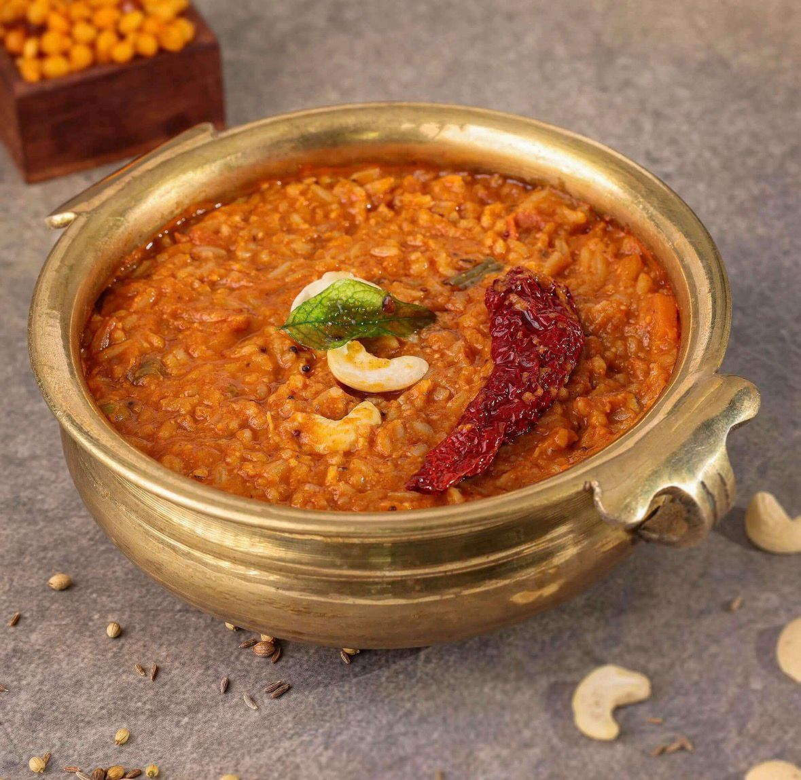
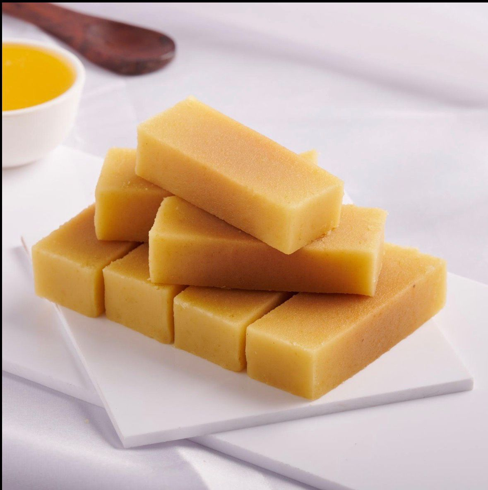
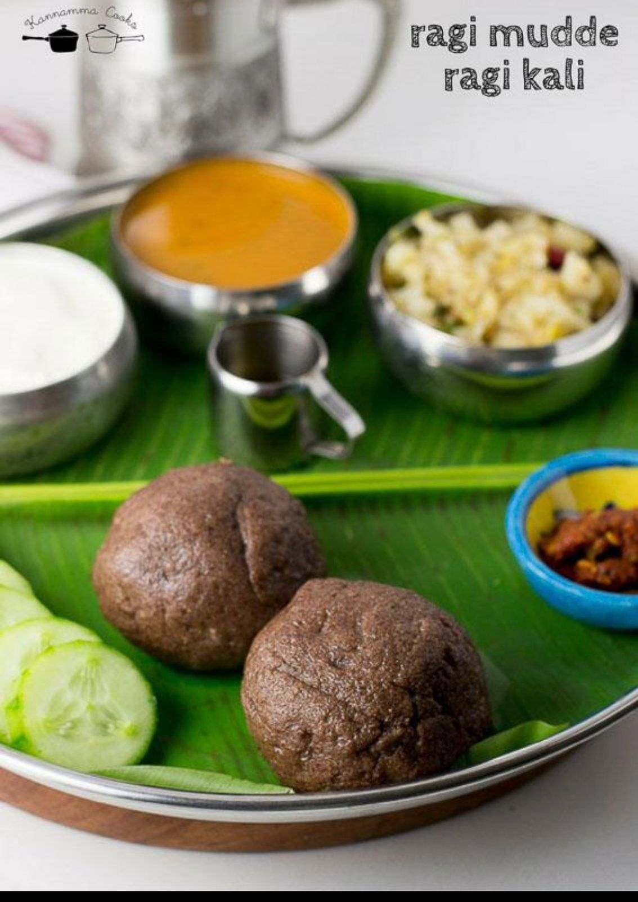
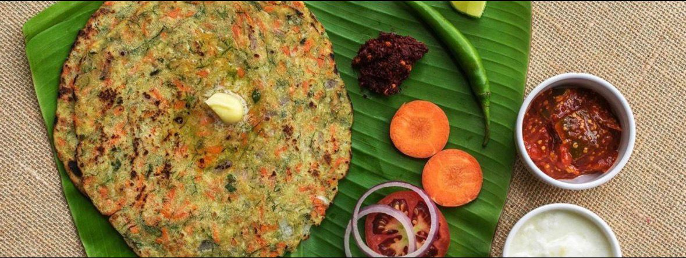
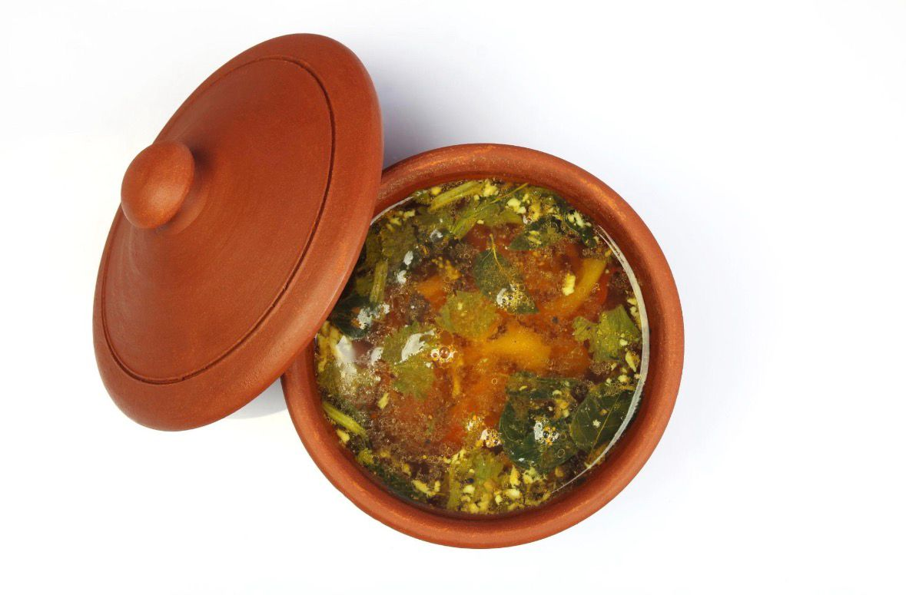

Bisi Bele Bath
Ingredients: Rice, toor dal, vegetables, spices
Description: A spicy, flavorful rice and lentil dish, a Karnataka classic.

Mysore Pak
Ingredients: Gram flour, ghee, sugar
Description: A rich and sweet dessert, famous across Karnataka.

Ragi Mudde
Ingredients: Finger millet flour, water, salt
Description: Nutritious finger millet balls, eaten with spicy sambar or curry.

Neer Dosa
Ingredients: Rice, water, salt
Description: Thin, soft dosas made from rice batter, served with chutney or curry.

Mysore Rasam
Ingredients: Semolina, vegetables, spices
Description: A spicy and savory upma, popular for breakfast in Karnataka.